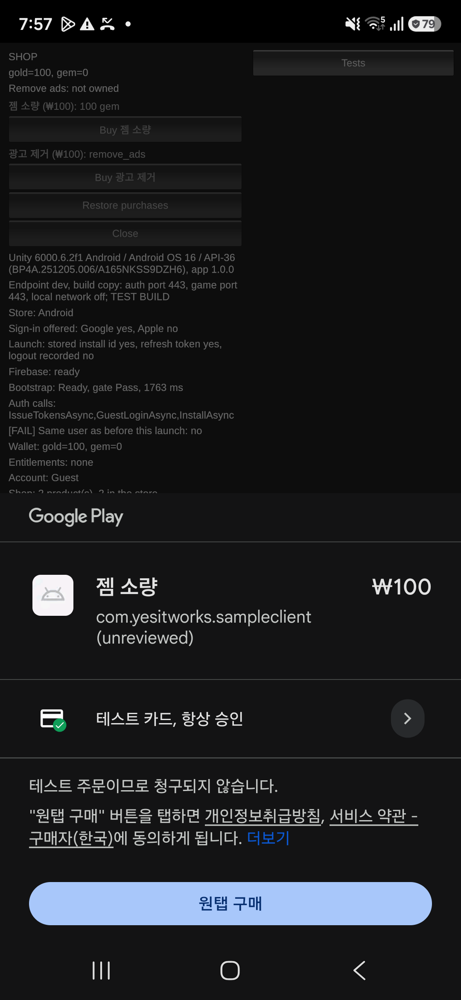

작업 목표
앞 단계까지 플랫폼에는 인증, 플레이어 프로필, 지갑, 원격 설정, 소셜 로그인과 계정 삭제가 갖춰졌다. 이번 단계의 목표는 결제였다. 출시한 게임 「흰둥이는 퐁퐁퐁」의 결제 코드에서 검증된 부분을 가져오되, 이번에는 세 가지를 처음부터 구조로 못 박기로 했다. 구매 확인은 클라이언트가 아니라 서버가 스토어에 직접 묻는다. 상품이 무엇을 주는지는 코드 상수가 아니라 데이터가 정한다. 그리고 같은 거래가 몇 번 도착하든 지급은 한 번이다.
작업 결과
다섯 파트로 나눠 진행했다. 지갑 쓰기와 요청 ID, 제품 카탈로그, 구매 서버, Unity 클라이언트, 그리고 실제 스토어 검증. 파트마다 계획 → 승인 → 구현 → 보고 → CI → 병합을 거쳤고, 마지막 파트에서 iPhone X와 Galaxy A16으로 실제 구매를 돌렸다.


두 스토어에서 실제 구매 12건을 돌렸고, 거래 12건에 지급은 정확히 12번이었다. 두 번 지급된 거래는 없다.
단계 시작 때 950개에서 69개가 늘었다. 병렬 호출, 응답 유실 재생, 복원, 삭제 경합, 로그에 영수증이 남지 않는지까지 포함한다.
서버가 Apple이나 Google에 거래를 묻고 지급까지 끝내는 데 걸린 시간. 재시도 응답은 수십 밀리초였다.
지갑 → 카탈로그 → 구매 서버 → Unity → 실기기 순서로 다섯 개의 PR을 병합했다. 모두 CI 세 작업을 통과했다.
같은 요청을 다시 보내도 한 번만 적용된다
결제에 앞서 지갑에 돈을 넣고 빼는 서버 API부터 다시 만들었다. 재화를 쓰는 쪽과 주는 쪽은 서버 안에서 게임 모듈이 호출하는 API이고, 클라이언트가 금액을 직접 지정하는 경로는 처음부터 두지 않았다. 가격과 보상은 게임 규칙이지 클라이언트가 보내는 값이 아니기 때문이다.
요청 ID
클라이언트가 돈이 움직이는 요청을 보낼 때는 요청마다 고유 ID를 붙인다. 서버는 플레이어의 프로필 행을 잠근 뒤 그 ID를 찾아보고, 이미 처리한 ID면 저장해 둔 응답을 그대로 돌려준다. 같은 ID로 다른 내용을 보내면 거부한다. 아무것도 쓰지 않은 거부(잔액 부족 등)는 저장하지 않아서, 충전 뒤 다시 보내면 정상으로 평가된다.
64비트 잔액
흰둥이의 잔액은 32비트였다. 사용자가 샘플뿐인 지금이 바꾸기 가장 싼 시점이라 잔액과 금액을 64비트로 넓혔다. 넘침 검사는 64비트 범위에서 한다.
(플랫폼, 거래 ID)로 중복을 막는다. 요청 ID는 교환처럼 스토어가 끼지 않는 쓰기용이다. 이 구분을 처음 지시문에 잘못 적었다가 Claude Code가 결정 기록을 근거로 바로잡았다.상품이 무엇을 주는지는 데이터가 정한다
흰둥이는 상품 ID와 지급량이 코드 상수에 있었다. 이번에는 환경별 카탈로그 파일(JSON)을 저장소에 두고, 원격 설정과 같은 방식의 도구로 검증 → 계획 → 적용해서 테이블에 넣는다. 서버는 이 테이블의 불변 스냅샷을 들고 있다가 관리 엔드포인트로 다시 읽는다.
상품 한 줄의 내용
스토어 공통 상품 ID, 유형(소모성 · 비소모성), 지급 목록(통화와 수량) 또는 자격(entitlement) 목록, 활성 여부. 가격과 표시 이름은 스토어가 소유하므로 파일에 없다.
삭제하지 않는다
파일에서 빠진 상품은 비활성화될 뿐 테이블에서 사라지지 않는다. 비활성 상품이라도 검증된 거래가 오면 지급한다. 플레이어가 돈을 냈기 때문이다. 상품의 유형은 한 번 정하면 바꾸지 못하게 도구가 막는다.
카탈로그 버전
클라이언트가 상품 목록을 캐시하고 바뀐 때만 다시 받도록, 활성 상품 내용의 해시를 버전으로 돌려준다. 갱신 시각을 쓰면 내용이 같은데도 바뀐 것처럼 보이거나 복원 뒤 값이 되풀이될 수 있어 해시를 택했다.
구매 확인은 서버가 스토어에 직접 묻는다
클라이언트는 스토어가 준 거래 정보를 서버에 넘기기만 한다. 서버는 기존 거래를 먼저 확인하고, 카탈로그에서 상품을 찾고, 데이터베이스 트랜잭션 밖에서 스토어에 묻고, 그다음 플레이어 행을 잠근 채 거래 기록과 지급을 한 트랜잭션으로 끝낸다. 흰둥이의 순서를 그대로 지키되 스토어 호출을 잠금 밖으로 뺐다.
기존 거래 확인
같은 (플랫폼, 거래 ID)가 있으면 스토어에 묻지 않고 저장된 지급 내용을 돌려준다.
스토어 검증
Apple은 App Store Server API, Google은 Play Developer API. 응답의 번들 ID, 상품 ID, 거래 ID, 폐기 여부를 대조한다.
기록과 지급
프로필 행 잠금 → 거래 행 삽입(영수증은 해시만) → 카탈로그대로 지갑과 자격에 지급. 유니크 키가 2차 지급을 구조적으로 막는다.
Google 승인
지급이 커밋된 뒤 서버가 acknowledge를 호출한다. 실패하면 백그라운드에서 재시도한다.
Apple: 서명까지 검증
흰둥이는 이미 폐기 예고된 영수증 검증 대신 App Store Server API를 쓰고 있어서 그 경로를 이식했다. 거기에 Apple이 돌려주는 서명된 거래 정보의 서명과 인증서 체인을 Apple Root CA에 대고 검증하는 단계를 더했다. 환경은 Production 우선으로 두고, 거래가 없으면 샌드박스에 다시 묻는다. 운영 서버가 쓸 조회 순서를 샌드박스 구매로 미리 증명하기 위해서다.
Google: SDK 없이 REST 세 개
Google의 공식 .NET 패키지는 릴리스가 잦고 의존 트리가 커서 버전을 고정하기 나쁘다. 구매 조회, 승인, 토큰 발급 세 가지 REST 호출을 HttpClient로 직접 하고, 서비스 계정 토큰은 작은 코드로 만들어 캐시한다. 테스트는 HTTP 수준의 스텁이 스토어를 대신한다.
승인은 서버가, 소비는 클라이언트가
Google Play는 승인되지 않은 구매를 3일 뒤 환불한다. 앱이 응답을 못 받고 죽어도 지급이 환불로 이어지지 않도록 승인은 서버가 한다. 비소모성 구매는 클라이언트가 OK를 받으면 거래를 끝내고 다시 호출하지 않으므로, 승인 실패는 서버 백그라운드가 30분마다 최대 48회 재시도한다. 소모성의 consume은 클라이언트가 한다. 서버가 하면 폰의 Play 캐시가 "이미 소유"로 남기 때문이다.
로그에 남지 않는 것
영수증 원문, 구매 토큰, 서명된 거래, 발급 토큰, 키는 로그에도 데이터베이스에도 남지 않는다. 데이터베이스에는 해시만 저장한다. 이를 확인하는 캡처 로그 테스트가 세 플랫폼의 구매와 복원을 실패 사례까지 돌리며 Trace 수준 로그를 뒤진다. 이 테스트가 HTTP 클라이언트 팩토리가 요청 주소(구매 토큰 포함)를 찍던 것을 잡아냈다.
Unity IAP 대신 직접 만든 얇은 브리지
클라이언트 쪽은 세 층이다. 게임 코드가 부르는 공통 구매 흐름(상태, 재시도, 재생, 카탈로그 캐시), 스토어별 어댑터, 그리고 네이티브 브리지. 게임 코드는 client.Purchases.PurchaseAsync("상품 ID")만 부르고, 어느 폰이냐에 따라 아래가 바뀐다.
왜 Unity IAP를 쓰지 않았나
- Unity IAP 5.4는 6월 이후 여섯 번 릴리스됐고, 서비스 코어와 텔레메트리 패키지가 딸려 온다. 저장소 전체에서 패키지 버전을 한 곳에 고정하는 원칙과 맞지 않았다.
- Unity IAP의 confirm은 Google 승인까지 수행한다. 승인을 서버가 맡는 이번 설계와 겹친다.
- 이미 Google 로그인과 Play API를 직접 호출로 가져갔으니 같은 방향이다.
대신 받아들인 비용
- Swift(StoreKit 2)와 Java(Play Billing 9.1.0) 각 300줄 정도를 직접 소유한다. Swift는 저장소에 처음 들어왔다.
- Play Billing 메이저 버전은 매년 8월 기한이 있어 한 줄 올리고 재검증해야 한다. 그 절차를 운영 문서에 적어 두었다.
- 안전장치: 실기기에서 브리지 하나가 안 되고 그 자리에서 못 고치면 그 스토어만 Unity IAP로 바꾼다는 규칙을 미리 정했다. 어댑터 뒤의 인터페이스는 그대로라 교체 범위가 한정된다.
끝내기는 OK일 때만
스토어 거래를 finish하는 것은 서버가 OK 또는 "이미 처리됨"을 답했을 때뿐이다. 보류, 스토어 불가, 상품 사용 불가면 거래를 미완료로 두고, 다음 실행이나 복원이 마무리한다.
계정 토큰
Apple의 appAccountToken과 Google의 obfuscatedAccountId에 게임 계정 ID(해시)를 실어 보낸다. 첫 지급에서 스토어가 돌려준 계정이 요청한 계정과 다르면 거부한다. 영수증을 다른 계정에 넘겨 지급받는 경로를 막는다.
시간 제한 보정
구매·복원 호출은 다른 호출의 5초 시도로는 부족했다. 서버의 스토어 호출 예산이 10초씩 두 번이라, 이 두 호출만 시도당 25초, 총 60초로 넓혔다. 실제 측정은 0.8~1.6초라 여유가 크다.
실제 스토어, 실제 기기, 실제 구매 12건
서버 테스트의 스텁은 우리가 가정한 모양만 검사한다. 재전달, 응답 유실, 보류 구매, 승인 규칙은 실제 스토어만 만들어 낸다. 샘플 앱을 App Store Connect와 Play Console에 등록하고, 샌드박스 테스터와 라이선스 테스터로 세 번의 기기 세션을 돌렸다.
iPhone X · App Store 샌드박스 · 8사례
약 60분| 사례 | 확인한 것 |
|---|---|
| 상점 열기 | Swift 브리지의 첫 실행. 상품 두 개와 한국어 이름·가격이 떴다. |
| 소모품 구매 | Apple이 키를 받아들였고, 실제 인증서 체인 검증이 통과했으며, Production에 없으면 샌드박스로 가는 조회 순서가 동작했다. |
| 비소모품 구매 → 재실행 | 자격이 구매 응답과 게임 입장 응답 양쪽에서 왔다. 재생할 거래 없음. |
| 응답 한 번 유실 | 두 번째 시도가 "이미 처리됨"으로 답했다. 지급은 한 번, Apple에 다시 묻지 않았다. |
| 모든 응답 유실 → 재실행 두 번 | 서버에는 행이 이미 생겼고, 첫 재실행의 재생이 거래를 끝냈다. 재시도 2회 + 세션 내 재생 3회 + 재실행 재생 1회, 여섯 번 모두 행에서 답했다. |
| 다른 계정에서 복원 | 자격만 재적용, 통화는 없음. 거래 행의 소유자는 첫 구매자 그대로. |
| 구입 기록 지운 뒤 재구매 | 세 번째 시도에 통과. 절차가 밝혀졌다(아래). |
Galaxy A16 · Google Play 라이선스 테스터 · 8사례
약 75분맥에서 사이드로드한 디버그 빌드로 라이선스 테스터 결제가 됐다. Play 서명 빌드는 필요 없었다. iOS와 같은 사례에 더해:
| 사례 | 확인한 것 |
|---|---|
| 소모품 구매 | Google이 서비스 계정 키를 받아들였고, 조회와 승인이 동작했으며, 라이선스 테스터에게도 계정 ID를 돌려줬다(열려 있던 질문). |
| 모든 응답 유실 | 앱이 응답을 못 받았는데도 서버가 스스로 승인했다. 승인을 서버에 둔 이유가 그대로 증명됐다. |
| 보류 구매(느린 테스트 카드) | 앱은 아무것도 보내지 않았고, 62초 뒤 Play가 승인하자 스토어 업데이트를 받아 탭도 재실행도 없이 지급됐다. |
| 거절 카드 | 지급 없음, 행 없음. 거절 자체는 7분 안에 관측되지 않아 미검증으로 남겼다. |
| 승인 확인 | 여섯 행 모두 1회차 승인. 10분 뒤에도 비소모품이 소유 상태였다. 3일 뒤 Play Console 주문 확인은 남겨 두었다. |
Galaxy A16 · LTE · 교환 응답 유실
약 20분Wi-Fi를 끄고 모바일 네트워크로 인터넷에 공개된 개발 서버(운영 환경과 같은 구성)에 붙여, 응답을 4초 붙잡고 비행기 모드로 끊기, 8초 붙잡기, 응답 한 번 버리기, 전부 버리기를 돌렸다. 18개 검사 모두 통과. 유실 뒤 같은 요청 ID로 재시도해도 한 번만 적용됐다. 이 세션만 서버에 테스트 컨트롤을 켜는 3분 반짜리 윈도우를 열었다 닫았다.
콘솔과 기기에서 알게 된 것
문서로는 알 수 없고 직접 눌러 봐야 아는 것들이다. 운영 문서의 게임별 스토어 절차에 그대로 들어갔다.
샌드박스 구입 기록 지우기는 세 단계
폰에서만 지우면 상품이 여전히 소유 상태였다. App Store Connect에서 지우니 Apple은 거래를 잊었지만 폰은 캐시된 거래를 계속 보내 "유효하지 않은 영수증"이 됐다. 폰과 콘솔 둘 다 지운 뒤 앱의 복원(AppStore.sync)으로 동기화하고 나서야 정상 시트가 떴다.
Play "인앱 상품"은 "일회성 제품 + 구매 옵션"이 됐다
Play Console의 상품 구조가 바뀌어 상품마다 구매 옵션(offer)이 붙는다. Java 브리지가 구매 옵션의 토큰을 골라 구매 흐름에 넘겨야 하는데, 첫 실행에서 가격까지 제대로 떴다.
단위를 알면 콘솔 작업이 줄어든다
Play 서비스 계정의 주문 권한은 계정 수준이라 앱을 추가할 필요가 없었다. Apple의 샌드박스 테스터와 인앱 구입 키는 팀 단위라 흰둥이 것이 샘플에도 쓰였다. 키 파일만 샘플용으로 새로 발급해 유출 시 격리를 유지했다.
앱의 첫 비소모품은 앱 버전과 함께 심사
App Store Connect는 앱의 첫 비소모품을 단독 심사하지 않는다. 샘플은 심사에 보내지 않아 무관했지만, 첫 게임의 첫 버전 제출 때 적용되는 규칙이라 절차에 적었다.
Android 앱 데이터 백업이 설치 ID를 되살린다
앱을 지우고 새로 설치했는데 이전 빌드의 설치 ID와 토큰이 돌아왔다. 운영 서버는 모르는 값이라 새 설치로 처리됐지만, 기기 백업이 인증 상태를 옮길 수 있다는 점은 출시 전 항목으로 남겼다.
테스트 카드의 보류는 약 1분
Play의 "몇 분 후 승인" 카드는 62초 만에 승인됐고, 앱은 스토어 업데이트 경로로 지급했다. 스토어 업데이트 수신은 폰에서 처음 돌아간 경로였다. iOS 샌드박스에는 승인 대기(Ask to Buy)와 환불을 만들 방법이 없어 첫 게임으로 넘겼다.
결제 시트는 사람이, 나머지는 AI 에이전트가
파트마다 Claude Code를 새 세션으로 시작해 계획을 먼저 받고, 설계 대화에서 검토·승인한 뒤 구현하게 했다. 보고는 정해진 형식으로 받아 다시 검토하고, push와 병합만 사람이 했다. 실기기 세션에서는 Android 앱 조작과 로그 판독을 Claude Code가 adb로 맡았고, 사람은 결제 시트를 누르고 데이터베이스 조회 명령을 실행해 출력을 넘겼다.
AI 에이전트가 맡은 일
- 파트별 계획과 결정 권고, 코드와 테스트, 마이그레이션
- 커밋마다 깨끗한 작업 트리에서 검사 · 빌드 · 테스트, 마지막 커밋은 양쪽 플레이어 빌드와 스모크 · 리허설까지
- dev 서버 배포 명령 준비, 공개 엔드포인트와 SmokeClient로 교차 확인
- Android 기기 조작, 로그 수집, 사례별 판정
- 세션 결과와 스토어 절차를 운영 문서로 정리
사람이 직접 한 일
- 계획 검토와 37개의 결정, 스토어 검증 범위(두 스토어 모두) 선택
- App Store Connect · Play Console · Firebase 콘솔 설정, 키 발급
- 내부망에서 dev 서버 배포와 비밀 파일 배치
- iPhone을 Xcode에서 실행, 두 폰의 결제 시트 탭, 데이터베이스 조회
- push, 병합, 비밀 번들 갱신
중복 지급 방지는 설계가 아니라 증명으로 끝난다
서버 테스트 1,019개가 통과해도 그것은 우리가 가정한 스토어의 모양에 대한 통과다. 실제 Apple 인증서 체인, 실제 Google 승인 규칙, 실제 폰의 캐시와 백업은 스텁이 만들지 못한다. 이번 단계의 종료 기준을 "실제 테스트 구매에서 중복 지급 없음"으로 둔 이유다.
이번 단계의 진행 순서
지갑 쓰기 API와 요청 ID
↓
제품 카탈로그(파일 → 테이블 → 스냅샷)
↓
구매 서버(스토어 검증 · 멱등 지급 · 서버 승인)
↓
Unity 클라이언트(자체 브리지 · 재생 · 복원)
↓
App Store 샌드박스 · Google Play 테스터 · LTE 실기기
↓
게임별 스토어 절차를 운영 문서로실기기 세션에서 고친 코드는 클라이언트 detach 하나와 테스트 스크립트의 ping 대상뿐이었다. 서버는 세션 동안 한 줄도 바뀌지 않았다.
두 스토어에서 응답 유실, 재실행 재생, 다른 계정 복원, 보류 구매 뒤에도 거래 하나에 행 하나, 지급 한 번이었다.
3줄 요약
- 인앱 결제를 서버 검증 중심으로 만들었다. 구매 확인은 서버가 App Store Server API와 Play Developer API에 직접 묻고, 지급은 카탈로그 데이터가 정하며, 같은 거래는 (플랫폼, 거래 ID)로 한 번만 지급한다.
- Unity IAP 대신 StoreKit 2와 Play Billing을 직접 감싼 얇은 브리지를 썼고, iPhone X와 Galaxy A16에서 실제 구매 12건을 돌려 응답 유실·재실행·복원·보류 뒤에도 중복 지급이 없음을 확인했다.
- 코드와 기기 조작은 AI 에이전트가, 결제 시트와 콘솔과 데이터베이스 조회는 사람이 맡았다. 콘솔에서 직접 확인한 사실들이 다음 게임의 스토어 등록 절차가 됐다.
다음 작업
첫 신작의 범위와 환경
Phase 6어떤 게임을 어느 범위로 만들지 정하고, 운영 환경(스키마, 계정, 도메인, Firebase 프로젝트)과 첫 게임의 스토어 앱 · 키를 이번에 적어 둔 절차대로 만든다.
결제 단계가 첫 게임에 넘긴 결정
Phase 6구매 전 계정 연결을 요구할지, 환불 · 폐기 알림(App Store Server Notifications, Play voided purchases)에 어떻게 대응할지, 유료 · 무료 통화의 소비 순서를 어떻게 둘지는 첫 게임이 정한다.
출시 게이트
Before launch개인정보 양식, Android 삭제 화면의 지연, 기기 백업과 인증 상태, R8 매핑과 네이티브 심벌 업로드, 보존 기간의 법률 확인을 출시 전에 닫는다.